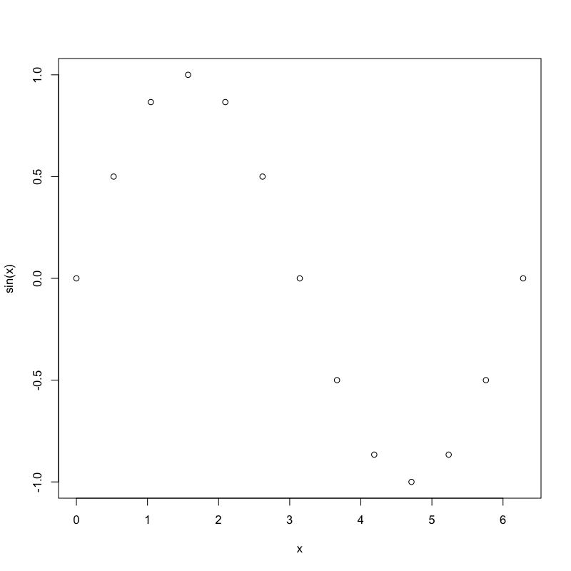
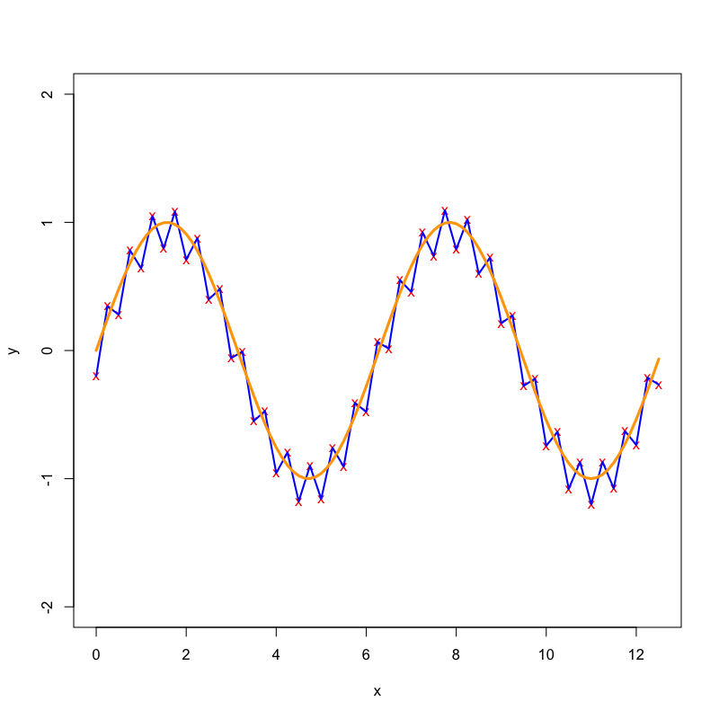
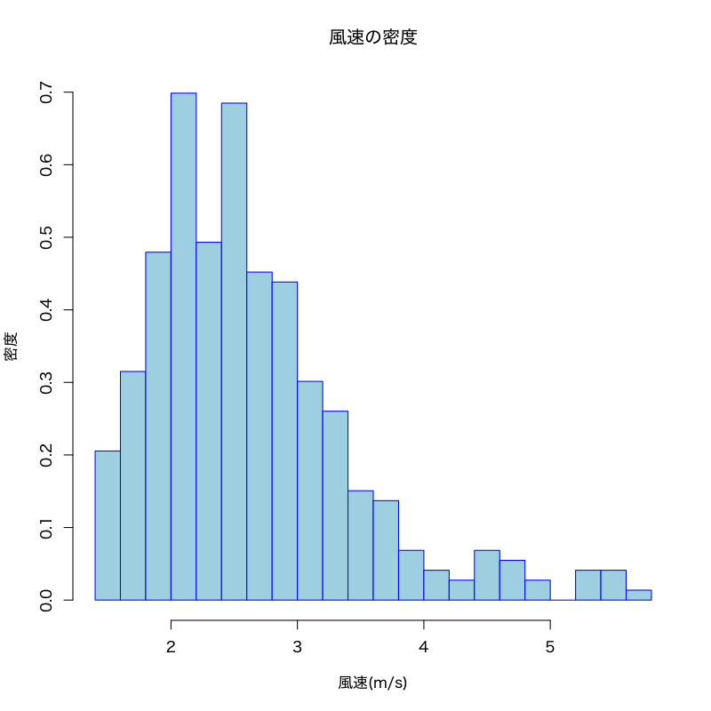
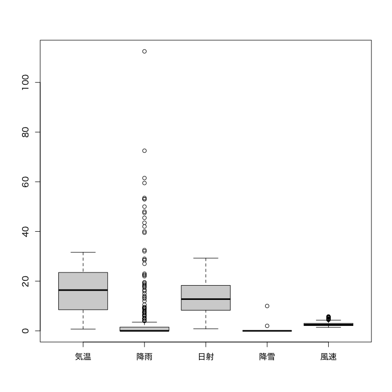
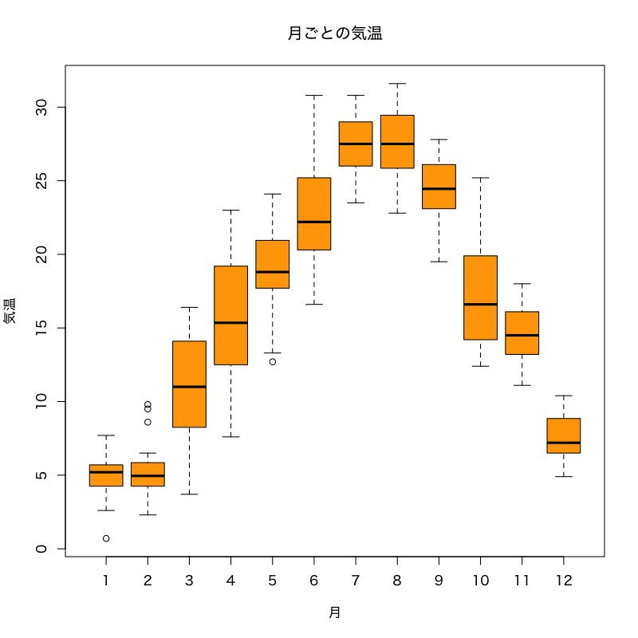
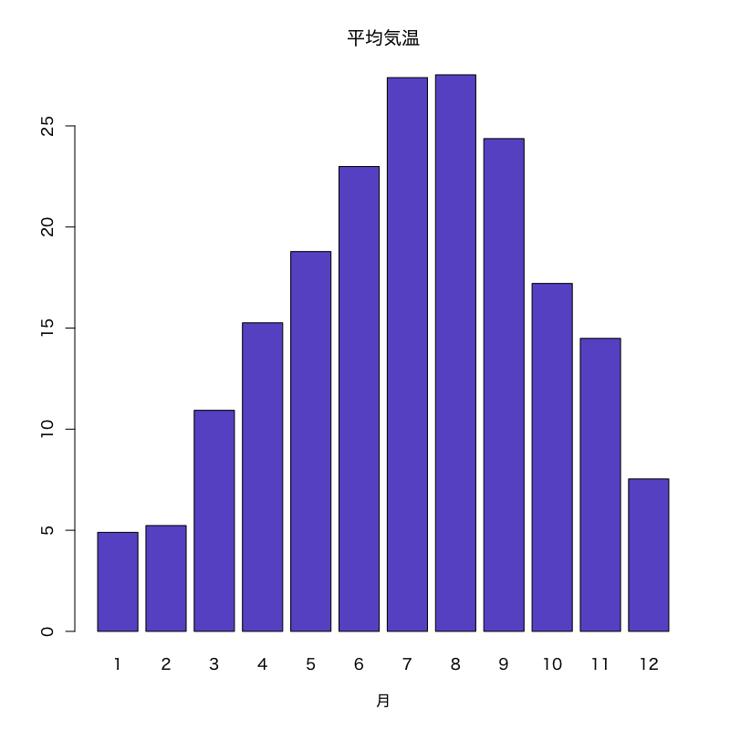
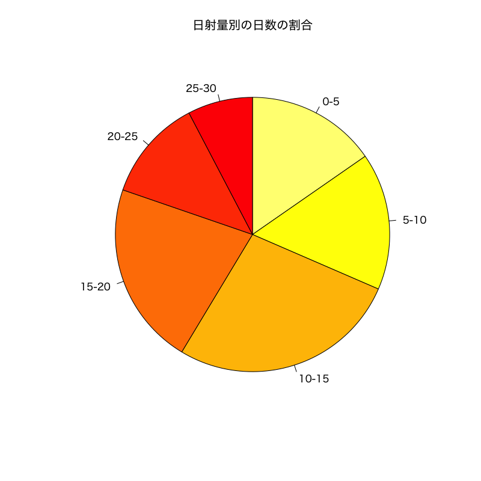
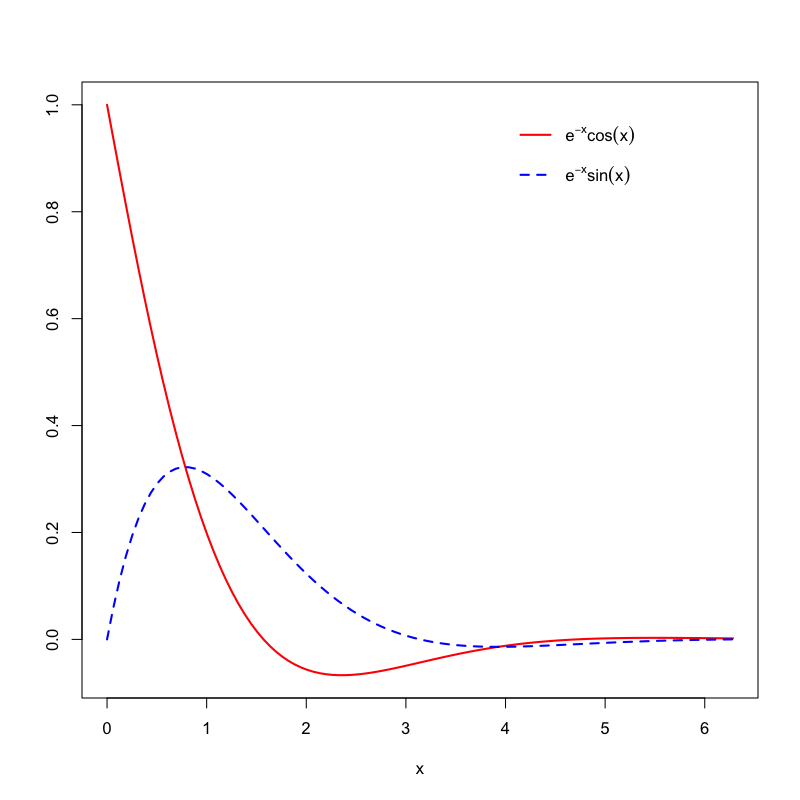

データの可視化
様々なグラフの描画
(Press ? for help, n and p for next and previous slide)
講義の内容
- 可視化の重要性
- 基本的な描画
- 分布の視覚化
- 比率の視覚化
- 多次元データの視覚化
可視化の重要性
可視化のための機能
- データの特徴や傾向を把握するために効果的
- Rはきわめて多彩な作図機能を持つ
package::graphicsに含まれる代表的な描画関数を取り上げて解説する- 描画関連の関数は色， 線の種類や太さ， あるいは図中の文字の大きさなどを指定することができる
- 用意されている多彩なオプションは説明しきれないため，
必要に応じて
関数
help()(ヘルプ)と 関数example()(例題) を参照のこと
図の保存
- RStudioの機能を使う場合 :
- 右下ペインの“Plots”タブの“Export”をクリック
- 形式を指定する クリップボードにコピーもできる
- サイズを指定して保存
コンソール / R Scriptで実行する場合 :
help("pdf"): PDFファイルに保存help("png"): PNGファイルに保存help("dev.copy"): “graphic device” 間でコピー
などを参照
サンプルデータの説明
jpdata- https://www.e-stat.go.jp (統計局)
- 地域から探す / 全県を選択 / 項目を選択してダウンロード
- 日本語が扱えることを想定して日本語
- 英語のために -en を用意
- データファイル (文字コード : utf8)
- jpdata1.csv : 県別の対象データ
- jpdata2.csv : 対象データの内容
- jpdata3.csv : 県別と地域の対応関係
作業ディレクトリのdata内に置いて読み込む場合
JP.data <- read.csv(file="data/jpdata1.csv", fileEncoding="utf8", row.names=1) JP.item <- read.csv(file="data/jpdata2.csv", fileEncoding="utf8") JP.area <- read.csv(file="data/jpdata3.csv", fileEncoding="utf8")- 変数名は自由に付けてよい
- https://www.e-stat.go.jp (統計局)
tokyo_weather- https://www.jma.go.jp (気象庁)
- 各種データ・資料 / 過去の地点気象データ・ダウンロード
- 地点 / 項目 / 期間を選択してダウンロード
データ項目
平均気温(℃),降水量の合計(mm),合計全天日射量(MJ/㎡),降雪量合計(cm),最多風向(16方位),平均風速(m/s),平均現地気圧(hPa),平均湿度(％),平均雲量(10分比),天気概況(昼：06時〜18時),天気概況(夜：18時〜翌日06時)
作業ディレクトリのdata内に置いて読み込む場合
TW.data <- read.csv(file="data/tokyo_weather.csv")
- https://www.jma.go.jp (気象庁)
tokyo_covid19_2021- https://stopcovid19.metro.tokyo.lg.jp (東京都)
データ項目
陽性者数, 総検査実施件数, 発熱等相談件数
作業ディレクトリのdata内に置いて読み込む場合
TC.data <- read.csv(file="data/tokyo_covid19_2021.csv", fileEncoding="utf8")
基本的な描画
関数 plot()
ベクトルデータの描画を行う関数
plot(x, y = NULL, type = "p", xlim = NULL, ylim = NULL, main = NULL, xlab = NULL, ylab = NULL, ...) ## x, y: ベクトル． y は省略可能． ## type: 描画タイプ．既定値は "p" (点)．"l" (折れ線)などが指定可 ## xlim/ylim: x/y 軸の範囲．既定値は自動的に決定 ## main: 図のタイトル．既定値は空白 ## xlab: x 軸のラベル名．既定値は Index ## ylab: y 軸のラベル名．既定値は x のオブジェクト名 ## ...: その他のオプション
関数 plot() のオプション
- よく利用される
...の部分col: 色の指定．"red"や"blue"など． 指定可能な色は関数colors()を参照pch: 点の形． 詳細はhelp("points")を参照lty: 線のタイプ． 実線・破線など．タイプ名もしくは数字で指定． 詳細はhelp("par")を参照lwd: 線の太さ．数字で指定cex: 文字の大きさ． 既定値の何倍にするかを指定
ベクトルの描画の例
- 1変数の場合
plot(x) - 2変数の場合
plot(x,y) - 基本的なオプションの指定例
1変数の場合
plot(x)x <- pi/6*(0:12) # 30度(pi/6)おきに1周期分 (0-2*pi) plot(sin(x)) # x軸はベクトルの要素番号(Index)，y軸はsin(x)の値を描画

2変数の場合
plot(x,y)x <- pi/6*(0:12) plot(x, sin(x)) # x の値に対する y=sin(x) の値を対応づけて描画

オプションの例
x <- pi/6*(0:12) plot(x,sin(x),type="l",lwd=3,col="blue",ylab="y=sin(x)")

重ね描き
別のベクトルを点として重ね描きする場合
points(x, y = NULL, ...) # ... は関数 plot() と同様なオプションが指定可能別のベクトルを線として重ね描きする場合
lines(x, y = NULL, ...) # ... は関数 plot() と同様なオプションが指定可能文字を重ね描きする場合
text(x, y = NULL, labels, ...) # labelsに文字列を指定
重ね描きの例
ベクトルデータの重ね描き
x <- seq(0, 4*pi, by=0.5) y <- sin(x) z <- cos(x) plot(x, y, type="b", pch="x", ylim=c(-2,2), col="red") # "b"="p+l" points(x, z, col="blue", pch="C") # 点を追加. pchは文字も指定できる lines(x, z, col="cyan", lwd=3) # 折れ線を追加

Figure 1: ベクトルデータの重ね描き
関数 curve()
1変数関数の描画を行う関数
curve(expr, from = NULL, to = NULL, add = FALSE, type = "l", xname = "x", xlab = xname, ylab = NULL, ...) ## expr: 1変数関数 (関数名) ## from: x 軸の左端 ## to: x 軸の右端 ## add: TRUE で重ね描きする ## xname: x 軸の変数名関数
plot()にも同様の機能があるplot(x, y = 0, to = 1, ...) # ... は"ベクトルの描画"と同様に指定が可能
関数の描画の例
関数の描画
curve(sin, from=0, to=4*pi, col="blue", lwd=2, # グラフの線の色と太さ xlab="time", ylab="sin/cos") # x/y軸のラベルの文字列を指定 curve(cos, # 上書きする場合は範囲の指定は不要 add=TRUE, # グラフを上書き col="red", lwd=2)

Figure 2: 関数の描画
関数とベクトルデータの重ね描き
x <- seq(0, 4*pi, by=0.25) y <- sin(x) + rep(c(-0.2, 0.1), len=length(x)) plot(x, y, type="p", pch="x", ylim=c(-2,2), col="red") lines(x, y, col="blue", lwd=2) # 折れ線を追加 curve(sin, add=TRUE, col="orange", lwd=3)

Figure 3: 関数とベクトルデータの重ね描き
散布図
- 2種類のデータ \(x_1,\dots,x_n\) および \(y_1,\dots,y_n\) が与えられたとき， 同じ index を持つ点 \((x_1,y_1),\dotsc,(x_n,y_n)\) を 平面上に描画した図
- データの性質を捉えるための基本的な描画の方法
関数 plot()
ベクトルデータの散布図を作成する (既出の機能)
plot(x, y = NULL, ...) #... は"ベクトルの描画"と同様に指定が可能 ## x: 1種類目のデータ c(x1,x2,...) ## y: 2種類目のデータ c(y1,y2,...) (x と同じ長さ)
関数 plot()
データフレーム x の変数A，Bの散布図を作成する
基本書式
plot(B ~ A, data = x, ...) # "Y軸 ~ X軸" と指定 ## x: データフレーム ## A,B: 変数名 (データフレームの列名を利用可能) ## "B ~ A" は formula と呼ばれる- formula の書き方は
help("formula")を参照 - データフレーム
xに対してplot(x)を実行すると， すべての変数のペアに対する散布図が 作成される(散布図行列・対散布図;pairs()後述)
- formula の書き方は
散布図の例
データフレームを用いた散布図
plot(Ozone ~ Wind, data=airquality, # xy軸名は列の名前が使われる pch="*", # 点の形を文字で指定することもできる col="red", cex=2) # cexは点の大きさの倍率を指定する

Figure 4: データフレームを用いた散布図
日本語に関する注意
- 日本語を含む図で文字化けが起こった場合
(主にmacOS)関数
parのfamilyオプションでフォントを指定
ヒラギノ角ゴシックW4を指定する場合par(family="HiraginoSans-W4") # 数字を変えると太さが変わる- 以下のサイトなども参考になる
https://oku.edu.mie-u.ac.jp/~okumura/stat/font.html
演習
練習問題
jpdata1/3.csv(前回配布のデータ)を用いて以下の問に答えよ．- 婚姻・離婚率の散布図を描け．
- 地方別に異なる点の形状を用いた散布図を描け．
- それ以外にも様々な散布図を描画してみよう．
(参考) 読み込み方
## CSVファイルは作業ディレクトリの下の data サブディレクトリにあるとする JP.data <- read.csv(file="data/jpdata1.csv", fileEncoding="utf8", row.names=1) JP.area <- read.csv(file="data/jpdata3.csv", fileEncoding="utf8")
分布の視覚化
ヒストグラム
- データの値の範囲をいくつかの区間に分割し， 各区間に含まれるデータ数を棒グラフにしたもの
- 各棒グラフの矩形
- 横幅が区間に対応
- 面積が区間に含まれるデータの個数に比例
- データの分布の仕方を可視化するのに有効
- どのあたりに値が集中しているか
- どの程度値にばらつきがあるか
関数 hist()
ヒストグラムを描画する関数
hist(x, breaks = "Sturges", freq, ...) # ... は関数 plot() と同様に指定可能 ## x: ベクトル ## breaks: 区間の分割の仕方を指定．既定値はSturgesの公式． ## 数字を指定するとデータ範囲をその数字に近い個数に等分割する． ## 詳細はヘルプを参照 ## freq: TRUE (既定値)を指定すると縦軸はデータ数 ## FALSE を指定すると縦軸はデータ数/全データ数
ヒストグラムの例
関数
hist()によるヒストグラムの作図if(Sys.info()["sysname"]=="Darwin"){par(family="HiraginoSans-W4")} # 日本語表示 ## 東京都の気温のヒストグラムを作成する TW.data <- read.csv("data/tokyo_weather.csv") # 東京都の気象データの読み込み hist(TW.data$temp, xlab="気温(℃)", ylab="頻度", breaks=25, # ビンの数を約25に設定 labels=TRUE, # 各ビンの度数を表示 col="lightpink", main="気温のヒストグラム")

Figure 5: ヒストグラム
密度での表示
if(Sys.info()["sysname"]=="Darwin"){par(family="HiraginoSans-W4")} # 日本語表示 hist(TW.data$wind, freq=FALSE, # 全体に対する割合で表示 xlab="風速(m/s)", ylab="密度", breaks=25, col="lightblue", border="blue", # 長方形の境界の色 main="風速の密度")

箱ひげ図
- データの中心，散らばり具合および外れ値を考察するための図 (ヒストグラムの簡易版)
- 複数のデータの分布の比較の際に有効
- 太線で表示された中央値(第2四分位点)
- 第1四分位点を下端・第3四分位点を上端とする長方形(箱)
- 第1四分位点・第3四分位点からそれぞれ箱の長さの1.5倍以内にあるデータのうちの 最小の値・最大の値を下端・上端とする直線(ひげ)
- ひげの外側のデータは点で表示される
関数 boxplot()
箱ひげ図を描画する関数
boxplot(x, ...) # ... は関数 plot() と同様に指定可能 ## x: ベクトルまたはデータフレーム ## ベクトルに対しては単一の箱ひげ図 ## データフレーム対しては列ごとの箱ひげ図質的変数ごとに分類して描画する場合
boxplot(B ~ A, data = x, ...) ## x: データフレーム ## A: x の変数 (質的変数; 性別・植物の種類など) ## B: x の変数
箱ひげ図の例
関数
boxplot()による箱ひげ図の作図if(Sys.info()["sysname"]=="Darwin"){par(family="HiraginoSans-W4")} # 日本語表示 ## 気温, 降雨, 日射, 降雪, 風速の箱ひげ図を作成する boxplot(subset(TW.data, select=c(temp:snow,wind)), # 数値データの一部を抽出 names=c("気温","降雨","日射","降雪","風速")) # 各箱ひげ図の名前を指定 ## names を指定しなければ列名が使われる

Figure 6: 箱ひげ図
条件ごとの箱ひげ図の作図
if(Sys.info()["sysname"]=="Darwin"){par(family="HiraginoSans-W4")} # 日本語表示 ## 月ごとの気温の分布を箱ひげ図によって可視化する boxplot(temp ~ month, data=TW.data, col="orange", xlab="月",ylab="気温",main="月ごとの気温") ## 図を回転する場合は horizontal を指定する ## boxplot(気温 ~ 月, data=myData, ## col="purple", main="月ごとの気温", horizontal=TRUE)

Figure 7: 条件ごとの箱ひげ図
比率の視覚化
関数 barplot()
棒グラフを作成する関数
barplot(x, width = 1, space = NULL, beside = FALSE, legend.text = NULL, args.legend = NULL, ...) # ... は関数 plot() と同様に指定可能 ## x: ベクトルまたは行列 (データフレームは不可) ## width: 棒の幅 ## space: 棒グラフ間・変数間のスペース ## legend.text: 凡例 ## beside: 複数の変数を縦に並べるか・横に並べるか ## args.legend: 関数 legend() に渡す引数
棒グラフの例
関数
barplot()による棒グラフの作図if(Sys.info()["sysname"]=="Darwin"){par(family="HiraginoSans-W4")} # 日本語表示 ## 月ごとに各変数の平均を計算 (foo <- aggregate(. ~ month, FUN=mean, data=subset(TW.data, select=c(month,temp:snow,wind)))) ## 月ごとの気温の平均値の棒グラフを作成する barplot(foo$temp, # 棒の高さのベクトル col="slateblue", # 棒の色の指定 names.arg=foo$month, # x軸のラベル xlab="月",main="平均気温") # タイトル

Figure 8: 棒グラフ
複数の棒グラフ
if(Sys.info()["sysname"]=="Darwin"){par(family="HiraginoSans-W4")} # 日本語表示 ## 気温, 降雨, 日射, 降雪, 風速の月ごとの棒グラフを作成する barplot(as.matrix(foo[ ,-1]), # 第1引数のデータフレームは行列にする col=rainbow(12)[c(8:1,12:9)], # 12色に色分け．季節に合うように色を並べ変えている beside=TRUE, # 各列ごとの棒グラフを横に並べる space=c(1.5, 3), # 棒グラフ間・変数間のスペースを指定 names.arg=c("気温","降雨","日射","降雪","風速"), # 各列の名前を指定．指定しなければ列名が使われる legend.text=paste0(foo$month,"月"), # 凡例の指定 args.legend=list(ncol=2)) # 凡例を2列にして表示

関数 pie()
円グラフを作成する関数
pie(x, clockwise = FALSE, ...) # ... は関数 plot() と同様に指定可能 ## x: ベクトル ## clockwise: 時計回りに書くか否か
円グラフの例
関数
pie()による円グラフの作図if(Sys.info()["sysname"]=="Darwin"){par(family="HiraginoSans-W4")} # 日本語表示 ## ヒストグラムの機能を用いてデータの集計を行う foo <- hist(TW.data$solar, breaks=5, plot=FALSE) # 5つ程度に分類を指定．実際には6つに分類 bar <- foo$count # 各ビン内のデータ数 baz <- foo$breaks # ビンの境界 names(bar) <- paste(baz[-length(baz)],baz[-1],sep="-") # ビンの範囲の文字列を作成 ## 6つに分類した日射量ごとの日数の割合を示す円グラフを作成する pie(bar, clockwise=TRUE, main="日射量別の日数の割合", col=heat.colors(length(bar),rev=TRUE)) # 日射量が高いほど赤を濃く指定

Figure 9: 円グラフ
演習
練習問題
tokyo_covid19_2021.csv(東京都の新型コロナウイルス感染動向データ) を用いて以下の問に答えよ．- 陽性者数の推移の折線グラフを描け．
- 総検査実施件数の推移の棒グラフを描け．
- 曜日ごとの総検査実施件数の箱ひげ図を描け．
(参考) 読み込み方
## CSVファイルは作業ディレクトリの下の data サブディレクトリにあるとする TC.data <- read.csv(file="data/tokyo_covid19_2021.csv",fileEncoding="utf8")
多次元データの視覚化
関数 pairs()
対散布図(散布図行列)を作成する関数
pairs(x, ...) # 関数 plot() でも良い ## x: データフレーム- すべての列のペアに対する散布図を行列状に配置
変数
A1, \(\dots\),Ak(列名)のみ考える場合pairs(~ A1 + ... + Ak, data = x, ...) # 関数 plot() でも良い ## x: データフレーム ## A1,...,Ak: データフレームの列名
散布図行列の例
関数
pairs()による散布図の作図if(Sys.info()["sysname"]=="Darwin"){par(family="HiraginoSans-W4")} # 日本語表示 ## 気温, 日射, 風速に関する散布図を作成する pairs(~ temp + solar + wind, data=TW.data, labels=c("気温","日射","風速"), # 指定しなければ列名が使われる col=rainbow(12)[TW.data$month]) # 月毎に異なる色で表示

Figure 10: 散布図行列
関数 persp()
3次元のグラフを2次元に射影した俯瞰図を描く関数
persp(x, y, z, theta = 0, phi = 15, expand = 1, ...) # ... は関数 plot() と同様に指定可能 ## x,y,z: x,y,z 座標 ## z は点(x[i],y[j])に対応する値を(i,j) 成分とする行列で与える必要がある ## theta,phi: 俯瞰の方向を指定する極座標 ## expand: z軸の拡大度
3次元俯瞰図の例
関数
persp()による2変数関数の俯瞰図f <- function(x,y) x^2 - y^2 x <- seq(-3, 3, length=51) # x座標の定義域の分割 y <- seq(-3, 3, length=51) # y座標の定義域の分割 z <- outer(x, y, f) # z座標の計算 ## 基本的な俯瞰図 ## persp(x, y, z, col="lightblue") ## 俯瞰する向きを指定 persp(x, y, z, theta=30, phi=30, expand=0.5, # 俯瞰する視線の設定 col="royalblue", main=expression(z==x^2-y^2))
Figure 11: 俯瞰図
3次元グラフのためのパッケージ
以下は
scatterplot3d()の例library(scatterplot3d) # パッケージの読み込み scatterplot3d(x, color, angle = 40, ...) # ... は関数 plot() とは若干異なる ## x: x,y,z座標を指定するデータフレーム ## 関数 persp() のようにx,y,zを個別に指定することも可能 ## color: 色を指定(colではないので注意). 既定値は黒 ## angle: x軸とy軸の間の角度- 詳細は
example("scatterplot3d")を参照
- 詳細は
3次元散布図の例
関数
scatterplot3d()による3次元散布図## install.packages("scatterplot3d") # 初めて使う時に必要 library(scatterplot3d) # パッケージのロード if(Sys.info()["sysname"]=="Darwin"){par(family="HiraginoSans-W4")} # 日本語表示 ## 風速, 日射, 気温の3次元散布図を作成する scatterplot3d(subset(TW.data, select=c(wind, solar, temp)), xlab="風速",ylab="日射",zlab="気温", # 指定しなければ列名が使われる pch=4, color="orchid")

Figure 12: 3次元散布図
凡例の追加
関数 legend()
グラフに凡例を追加する関数
legend(x, y = NULL, legend, ...) # ...はその他のオプション ## x,y: 凡例の位置を指定 (座標やキーワードで指定が可能) ## legend: 凡例の文字列ベクトル- 複雑なオプションは
help("legend")を参照 - 数式の表示の詳細は
help("plotmath")を参照
- 複雑なオプションは
凡例の例
凡例の追加
f <- function(x) exp(-x) * cos(x) plot(f, 0, 2*pi, col="red", lwd=2, ylab="") g <- function(x) exp(-x) * sin(x) curve(g, lty=2, # グラフの線の形式 2は破線 add=TRUE, col="blue", lwd=2) legend(4, # 凡例の左上のx座標 1, # 凡例の左上のy座標 legend=c(expression(e^{-x}*cos(x)),expression(e^{-x}*sin(x))), lty=c(1,2), lwd=2, col=c("red","blue"), # 指定はグラフに準拠 bty="n", # 凡例の枠線の形式(オプション) "n"は枠線なし y.intersp=2) # 行間の指定(オプション)

Figure 13: 凡例の追加
東京の気象データを用いた例
if(Sys.info()["sysname"]=="Darwin"){par(family="HiraginoSans-W4")} # 日本語表示 ## 東京の気象データから月ごとの気温,降水量,日射量の平均を計算し描画する (foo <- aggregate(. ~ month, FUN=mean, data=subset(TW.data, select=c(month,temp,rain,solar)))) plot(foo$temp, type ="b", lwd=3, col="green", ylim=c(0, max(foo$temp)+1), xlab="月", ylab="", main="東京の気候データ", axes=FALSE) # 軸は無 axis(1, 1:12, 1:12); axis(2) # x(1),y(2)軸の作成 lines(foo$rain, type="h", lwd=3, col="blue") # 棒グラフ lines(foo$solar, type="s", lwd=3, lty=2, col="red") # 階段グラフ abline(0, 0, lwd=2, lty="dotted") # y=0の線を引く legend("topleft", inset=0.02, # 左上で全体の2%(0.02)内側に良せる legend=c("気温","降水量","日射量"), col=c("green","blue","red"), lwd=3, lty=c(1,1,2))

補遺
関数 par()
グラフィクス環境の設定(複数図の配置, 余白の設定)をする関数
par(tag = value) ## tag: グラフィックスパラメータ- 描画の際の線の種類や色, 点の形等の既定値を設定することができる
- 設定可能なグラフィックスパラメータは
help("par")を参照
package::ggplot2
- Rのグラフィック機能を拡張するパッケージの1つ
- 統一的な文法で系統的に美しいグラフを描くことを目指して開発
- 詳細については https://docs.ggplot2.org/ を参照
演習
練習問題
配布したサンプルデータ
jpdata1.csvtokyo_weather.csvcovid19_tokyo.csvcovid19_tokyo_patients.csv
を用いて以下の問いに答えよ．
- 3次元の散布図を作成せよ．
- 凡例を加えたグラフを作成せよ．
次回の予定
- 計算機による数値実験
- 乱数とは
- 乱数を用いた数値実験